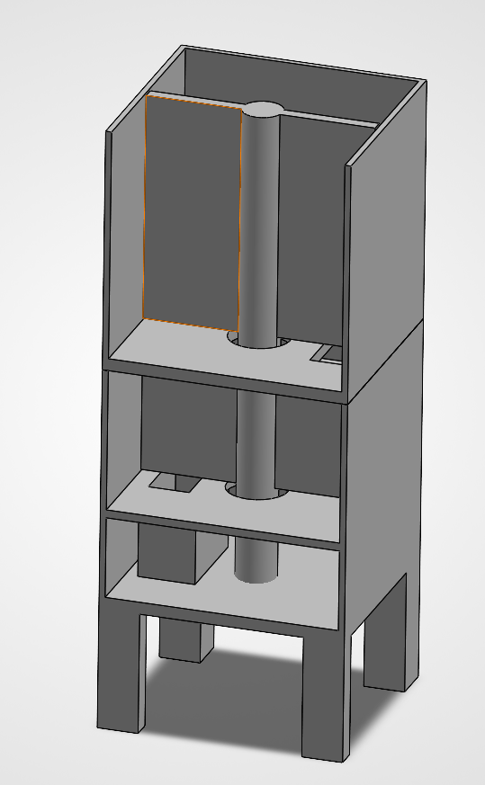
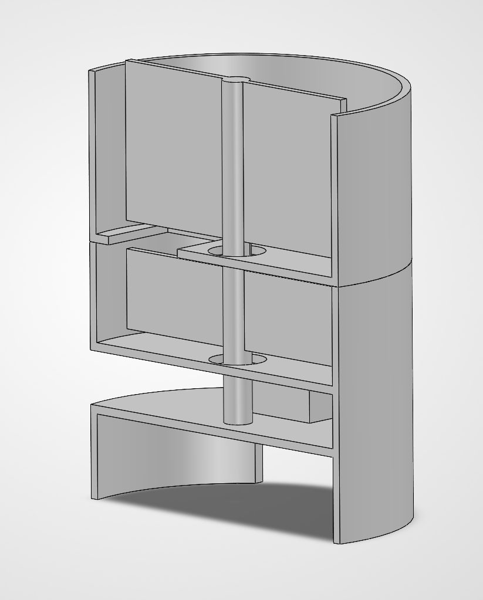
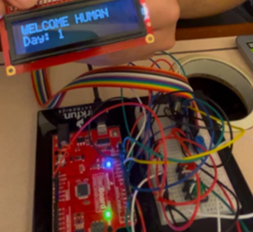

Case No. ZT-001 · Exhibit 01
Interactive Gachapon Prize Machine

Overview
An interactive twist on the gachapon machine: instead of money, it takes physical activity to win a prize. Users get a randomized challenge on an LCD screen and earn a prize or candy when they complete it.
By combining mechanical design, embedded systems and computer vision, the machine bridges the gap between digital interaction and a physical reward.
How it works
-
1. Generate a challenge
When it’s turned on, the Arduino greets you and picks a random task from a task list that the user can edit.
-
2. Display it on the LCD
The task appears on the LCD screen for the user to read.
-
3. Track movement
A camera connected to a laptop running MediaPipe Pose Landmarker tracks the user’s movement and checks that the task is complete.
-
4. Dispense the prize
The motor spins the dispensing mechanism and releases a prize.
SolidWorks design




Fig. B: The enclosure and internal layout, modeled in SolidWorks.
The round model was our second, improved design. The 3D printer had problems throughout the build week, so we couldn’t print it in time and went with the cube design instead.
Electronics


Fig. C: The display, controller and motor wiring, integrated on an Arduino.
Key features
-
Mechanical design
Calculated and verified the motor torque (3–4 mN·m) needed to move the prizes, and added ball bearings and gear motors.
-
Embedded programming
Task randomization and dispensing control, with easy-to-follow code and wiring.
-
Computer vision
Uses the open-source MediaPipe Pose Landmarker to track movement and send instructions to the Arduino.